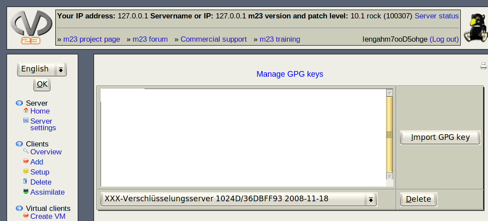

You can add new GPG keys or remove existing GPG keys to and from the m23 server with the dialog "Manage GPG keys".

- Adding a new key:
- Copy the desire public GPG/PGP key with your preferred key management application to the clipboard.
- Paste the key into the input box on the left of "Import GPG key".
- Click on "Import GPG key" to complete the procedure.
- Deleting of an existing key:
- Choose the key from the list you want to delete
- Click on "Delete" afterwards.
dodger
2014-01-22